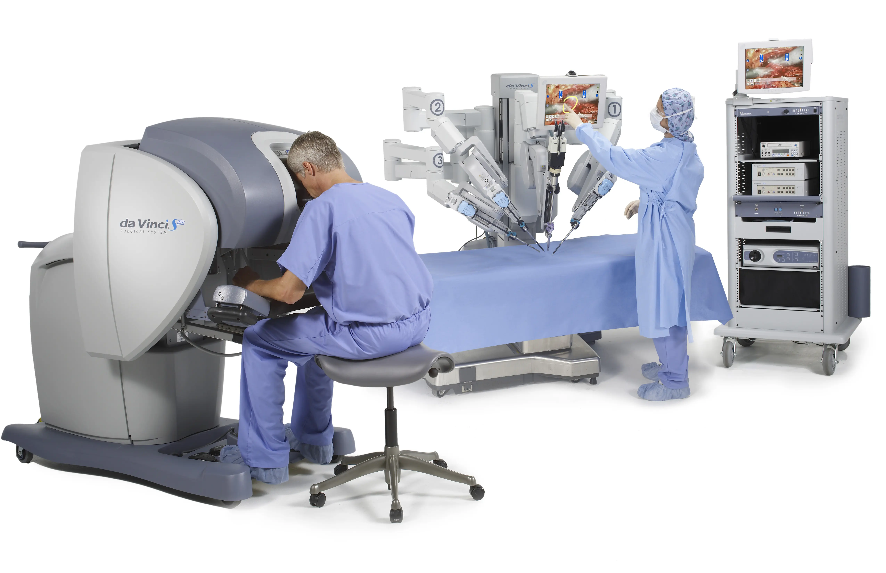

Industrial robots revolutionize manufacturing processes by automating tasks, resulting in increased efficiency, reduced costs, and improved quality control. They excel in performing repetitive tasks with high precision and accuracy.
Robots are making remarkable contributions to healthcare, assisting surgeons in performing procedures with greater precision and accuracy. They can also be utilized for tasks such as medication dispensing, patient monitoring, and rehabilitation exercises, ultimately improving patient care and outcomes.
Robots are indispensable in research and exploration missions, venturing into remote and hazardous environments. They facilitate data collection, investigation of unknown territories, and exploration of places like space, underwater depths, and high radiation areas.
Home robots bring automation to households, simplifying various tasks such as cleaning, monitoring security, and providing companionship for the elderly or individuals with disabilities. They enhance convenience, safety, and quality of life within our homes.
Robotics serves as an educational tool, engaging students in programming, engineering, and problem-solving. It sparks curiosity, fosters creativity, and develops critical thinking skills, preparing the next generation for a technologically driven world.